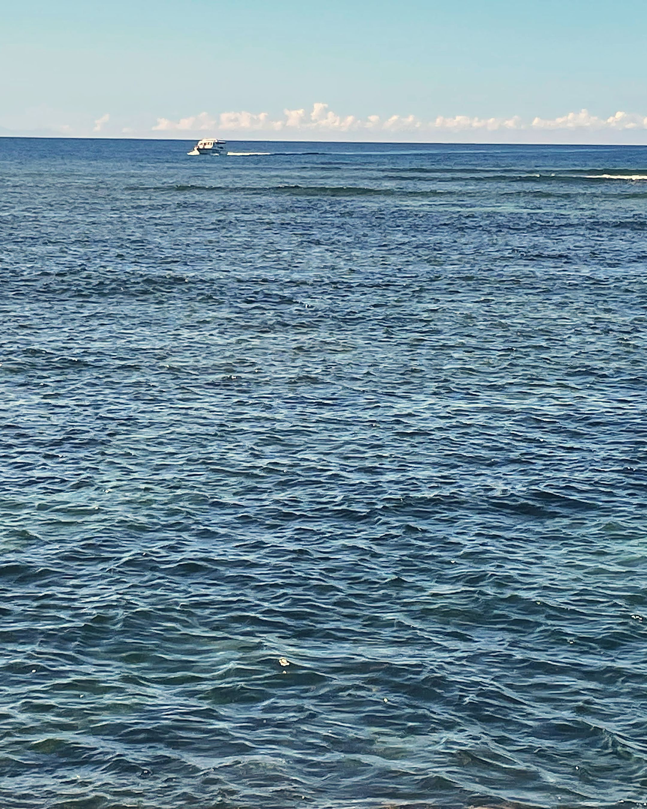

MoheliGoTRAVERSÉES MARITIMES
MOHÉLI · GRANDE COMORE
TU PARS VOIRQUELQU’UN.
La mer, c’est le chemin.
Ta place se prend depuis ton téléphone.
RÉSERVE TA TRAVERSÉE
TRAVERSÉES MARITIMES DES COMORESmoheligo.com
